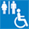

'조선의 법궁' 경복궁
경복궁은 조선 시대에 지어진 왕궁 중 가장 큰 궁궐이었다. 조선 왕조 개국 3년인 1395년에 완공된 궁궐은 390여 칸으로 한양의 중심축에 자리했다. 개국공신 정도전은 태조로부터 첫 번째
궁궐의 이름을 지으라는 명을 받았고, 고심 끝에 '새 왕조가 큰 복을 누려 번영할 것'이라는 의미로 경복궁(景福宮)이라는 이름을 붙였다. 경복궁은 5대궁인 경희궁, 덕수궁, 창경궁, 창덕궁 중
가장 큰 궁궐로 조선 왕조의 주요 궁궐 역할을 했다.
국보 제223호인 근정전(勤政殿)은 경복궁의 법전으로 각종 즉위식을 거행했던 왕실의 행사장이었다. 근정전의 옆에 위치한 경회루는 1만원권 구화폐 실릴 만큼 대표적인 건축물로 사랑받아 왔다.
한국은 미래 세대를 위해 궁궐의 재건, 복원, 유지를 위해 많은 시간과 노력을 투자해 왔다. 이외에도 일제강점기에 훼손을 겪었다가 2010년에 완전히 복원된 광화문, 고종과 명성황후가 머물던
건천궁, 경복궁의 후원인 향원정 등이 자리하고 있다. 경복궁을 방문할 때 국립 고궁 박물관과 국립 민속 박물관 또한 함께 방문하기 좋다.
경복궁은 조선 왕조 최고의 궁궐인 만큼 생각보다 넓다. 동선은 자유롭게 조정할 수 있다. 다만 좀 더 자세한 관람을 원한다면 우리궁궐지킴이 해설사들의 설명과 함께하는 것이 가장
좋다.
경복궁과 서촌 지역 방문 관람객의 편의를 높이고 경제 활성화를 위한 경복궁의 서문 영추문이 2018년 12월부터 전면 개방된다. 경복궁 출입문은 이전까지 남쪽의 광화문, 북쪽의 신무문, 동쪽의
국립민속박물관 출입문 등 총 세 곳으로 이번에 서쪽의 영추문을 43년 만에 개방하면서 동·서·남·북 모든 곳에서 출입이 가능해진다.
| 전화번호 | 02-3700-3900 |
|---|---|
| 팩스번호 | 02-3700-3909 |
| 웹사이트 | 웹사이트 보기 |
| 홈페이지 언어 | 한국어, 영어 |
| 이용시간 | 1월 ~ 2월 : 09:00~17:00(입장마감 16:00)
3월 ~ 5월 : 09:00~18:00(입장마감 17:00) 6월 ~ 8월 : 09:00~18:30(입장마감 17:30) 9월 ~ 10월 : 09:00~18:00(입장마감 17:00) 11월 ~ 12월 : 09:00~17:00(입장마감 16:00) ※ 기관 사정에 따라 관람시간 단축 및 조정이 있을 수 있습니다. |
| 휴무일 | 화요일 |
| 유모차 대여 | 있음 |
| 장애인 편의시설 | 장애인화장실 장애인 전용 주차장 접근가능 장애인 안내(휠체어 대여 및 기타) |
| 이용요금 | 대인, 외국인 대인 : 3,000원
외국인 소인 : 1,500원 만 24세 이하, 만 65세 이상, 장애인, 유공자 무료 |
| 이용시설안내 | 유아 유모차 대여는 안내소 앞에서 이용 가능, 매점, 기념품점, 환전소, 음성안내기 대여소, PDA 대여소 |
| 주소 | 03045 서울 종로구 사직로 161 (세종로,경복궁) |
| 교통 정보 | 5호선 광화문역 2번 출구 도보 10분 3호선 경복궁 5번 출구 도보 5분 |
서울을 방문했다면 꼭 방문해야 되는 곳. 경복궁은 우리의 역사다. 넓은 경복궁을 산책할 수 있는 것은 언제나 행복이다.
별점:★★★★★경복궁은 국민들이 자주 찾는곳으로 작성자는 주말에 자주 가족들과 방문하고 있음. 특히 가족들과 방문시 옛고궁의 멋을 즐길수 있으며 쾌적한 공기와 역사를 체험하고 힐링할수 있는곳임.
별점:★★★★☆날씨 좋은 날 종종 산책하러 경복궁에 가는데 마음이 편온해지는 기분이라고 할까요? 특히 봄이나 가을에 산책가는 걸 추천해요!
별점:★★★★☆Goooooood 다 좋습니다 다음에 또 오고 싶네요 근처 관광지도많고 먹을거리도많네요
별점:★★★★★요새 더더욱 코로나로 인해 사람 방문이 적음. 두자녀 동반시 성인 입장무료. 지하철 광화문역이나 종각역이용 편리.
별점:★★★★★커플.친구.가족등 다양한사람들과 가기좋은곳입니다 해설자분과 함께 가서 듣는것도 추천합니다 몰랏던 것들도알수있어서 좋아요.
별점:★★★★★